CSS part IV
Klan
DOM jako rodzina elementów. Pojedynczy element (np. main) z naszego drzewa to węzeł/node. Np. HTML ma 2 dzieci: head i body itp. itd. Rodzic - dziecko
Dziedziczenie. Jeżeli definiujemy styl w rodzicu np. kolor to dzieci go przejmą, ale jeśli jakieś dziecko ma ustawiony inny kolor bezpośrednio to wtedy nie, bo on jest ważniejszy niż ‘inherited od rodzica”. Jak wyłączymy np. w DevTools tą deklarację koloru dla elementu to kolor się zmieni na ten dziedziczony. Dzieci dostają atrybuty rodzica jeśli nie były wcześniej jawnie zdefiniowane.
Linki działają inaczej. Nie dziedziczą koloru po rodzicu bo są zdefiniowane style przeglądarki, które mają w tym wypadku pierwszeństwo. Dlatego zawsze musimy ustawić kolor linku bezpośrednio.
wartość: inherit; Możemy zdefiniować color: inherit; w CSS wtedy kolor linku nawet jeśli będzie ustawiony na inny, będzie dziedziczony a nie brany z przeglądarki. Inherit nadpisuje styl przeglądarki i też ten przypisany. Nie musi to być bezpośrednio od rodzica, może też być od dziadka itp.
Normalizacja vs reset
Nasza przeglądarka ma domyślne style w user agent stylesheet
Reset powinien zresetować wszystkie domyślne style
Typowy reset
*{
margin: 0;
padding: 0;
outline: none; jak wciskamy tab i outline jest on to pokazuje dokładnie linki itp, a to jest ważne
}
ul, ol {
list-style: none;
}
Normalizacja:
Plik do załączenia
Każda przeglądarka inaczej sobie zaimplementowała domyślne style, sa drobne różnice.
Sprawia, że nasze elementy (nawet jeśli nie będą ostylowane) będą wyglądać jakby były ostylowane przez domyślne style przeglądarki w sensowny sposób. Zbiór reguł.
Podpinamy w osobnym pliku stylesheet.
najpierw normalize potem nasze style.
Miksujemy
html {
box-sizing: border-box;
}
*, *:before, *:after {
box-sizing: inherit;
}
Dopisujemy w css na samej górze.
Flexbox
System pozycjonowania i rozmieszczania elementów.
display: flex; do kontenera dodajemy
Flex pracuje w dwóch osiach: poziomej - wiersz, pionowej - kolumna.
flex-direction:
row -->
column
row-reverse
column-reverse
flex-wrap: zawijanie wiersza, kolumny
nowrap tu nam nie pokaże tych 400px dla każdego, tylko ustawi wszystko obok siebie mniejsze
wrap np. ustawiamy 400px dla item i one się będą ładnie ustawiać zawijać
wrap-reverse
flex-flow:
row nowrap
flex-direction flex-wrap
justify-content: ustawienie elementów wzdłuż osi flex-direction
flex-start przyklejony do krawędzi lewej
flex-end prawej
center
space-between liczy wolne przestrzenie, robi się margines między nimi
space-around dodaje jeszcze marginesy po bokach i z obu stron na bazie tej wolnej przestrzeni między elementami
align-content: ustawienie wierszy/kolumn wzdłuż osi przeciwnej do flex-direction (taki justify-content dla drugiej osi)
stretch
flex-start one się zmniejszają bo nie mają zdefiniowanej wysokości
flex-end
center
space-between- nie ma przestrzeni na górze
space-around
align-items:ustawianie elementów wzdłuż osi przeciwnej do flex-direction, w obrębie pojedynczego wiersza, dla wszystkich elementów, które się znajdują w wierszu, będą tej samej wysokości, jak zmniejszamy ekran to zamiast 3 zrobią się 2 duże a ten jeden wskoczy jako mały
stretch
flex-start
flex-end
center
baseline - względem dolnej krawędzi pierwszego wiersza z tekstem

align-self: ustawianie elementu wzdłuż osi przeciwnej do flex-direction np. center
to niezależnie gdzie ta 6 się znajdzie będzie wyśrodkowana zawsze w wierszu
to jest robione na row i min-height przy column zdefiniowana wysokość, więcej używa się row

order: kolejność elementu
0
liczba całkowita (-/+)

albo zamiast 1 dać minus 1 i wtedy już tej 2 nie musimy pisać
flex-grow: współczynnik, odpowiada za to jak bardzo nas element powinien rosnąć w wierszu, jeżeli zostanie jakieś wolne miejsce, przestrzeń, wiersz się cały wypełnia
0 czyli elementy nie rosną, bo jest przestrzeń między nimi
liczba/proporcja np. 1 , też do pojedynczych elementów dodajemy wtedy dany element jak mu damy 2 to dostanie podwójnie dużo miejsca z tych wolnych przestrzeni
flex-shrink:
1
liczba/proporcja
np.0 to się kurczy, chowa, jest scroll jak jest 1 domyślne to tak ładnie się wszystkie pokazują przy zmniejszaniu strony, można dać pojedynczemu elementowi np. 2 to on się będzie kurczył bardziej niż reszta
flex-basis: określenie minimalnej wysokości lub szerokości elementu wewnątrz kontenera flexowego
none
rozmiar bazowy
flex: flex-grow flex-shrink flex-basis
Tła
background-image: url(‘ścieżka-do-pliku’);
url względem pliku z cssami
jak body się nie rozciąga na całą wysokość to dodać min-height: 100vh;
do body też dodajemy class
Background-position
ustawia nasze tło, względem elementu, który to tło dostaje, domyślna wartość 0
center center to środek zdjęcia, od środka będzie się ustawiać
bottom center jak dużo treści to to tło się powtarza od dołu
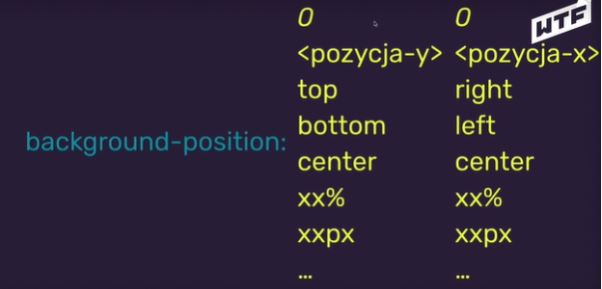Background-repeat:
repeat - domyślna
repeat-x powtarzane tylko po osi x
repeat-y
no-repeat
round otacza i skaluje
space
background-attachment:
scroll domyślnie, idzie razem ze stroną
fixed nie rusza się, nieruchome
local +overflow scroll, to się tło skroluje razem z treścią, bez local tło zostaje w miejscu a sama treść sie skroluje
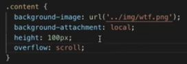background-origin: w, którym miejscu tło powinno się zaczynać, mało się to wykorzystuje
padding-box domyślnie
border-box
content-box
background-clip: w, którym miejscu tło powinno być cięte
border-box
padding-box
content-box tło ograniczone tylko do kontentu
background-color:
rgb(a) tło półprzezroczyste
(255,255,255,0.4) np. kontent ma tło białe i dajemy to a w body jest inne tło i wtedy je widać
background-size: jak tło ma się zachowywać, jak duże ma być
auto domyślne
cover zawsze będzie wypełniał naszą stronę, jak zmniejszamy to rośnie, żeby zapełnić sobą całą przestrzeń, jego przyklejenie definiujemy za pomocą background position, chcemy wypełnić całą przestrzeń, jak obrazek jest mniejszy to będzie skalowany w górę
contain chcemy, żeby było widoczne całe niezależnie od przeglądarki, chcemy pokazać cały obrazek
<width> <height> wartości w pixelach 100px 100px
Gradienty: CSSgradient
Jak dodajemy gradient to dobrze dodać background color ten podstawowy kolor i potem background image to już gradient.
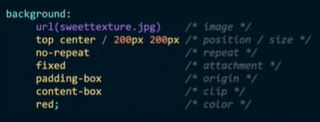jak poniżej tych zdefiniowanych podamy samo background to ono nadpisze te wcześniejsze
CSS part V
Grid
Dwuwymiarowy świat stron internetowych.
Po co grid? Potrzeba stworzenia prostego systemu do budowania layoutów (tabele, floaty, div-oza itp. nie spełniały oczekiwań i były kiepską praktyką).
Przyjazny zapis i możliwość łatwej edycji w kontekście responsywności.
Standard dopasowany do aktualnego stanu stron internetowych.

Numeracja zaczyna się od 1. Siatka, którą możemy podzielić na elementy. Prostokąty.
Kontener: display: grid z kilkoma elementami w środku np.6. Elementy ustawiają się jeden pod drugim. Jakby było flex to by się ustawiły obok blisko siebie.
Linie w devtoolsach, inspektor gridowy, identyfikacja kolumn i wierszy.
Grid działa bezpośrednio na swoje dzieci czyli jak w dziecku dodamy wnuka to one będą się jakby trzymać razem jako jeden element, nie przeskoczy nam nigdzie. Wszystkie własności odnoszą się do jego bezpośrednich dzieci.
Własność gridowa:
grid-template-columns:<wartości wypisujemy po spacji> grid-template-columns: 100px 300px;
3 kolumny będą 100px(liczy 1,3,5) i 3 obok po 300px(2,4,6), możemy dać więcej kolumn
Jak jedno jest wyższe to cały wiersz się rozszerza do wysokości najwyższego elementu.
Można używać innych wartości niż px, vw
grid-template-rows: 100px 200px, definiuje liczbę wierszy i jak mają się zachowywać. Jak np. kontent jest dłuższy niż te 100px to nam nie rozepcha tylko zostawi 100px. Jak się okaże, że się zrobiły 3 wiersze a nie mamy trzeciego zdefiniowanego to będzie przyjmował automatyczną wartość.
W wierszach rzadko definiujemy wysokość, generalnie.
Jednostka: fr taki ułamek, sumujemy ilość podanych frów i poszczególne wartości dzielimy przez sumę np. 1fr 1fr 2fr to ¼ ¼ 2/4
można mixować
columns: 200px 1fr - fr zawsze liczy wartość na bazie wolnej powierzchni, szerokości która została, ta wolna po odjęciu 200px, niezdefiniowana przez żadne jednostki
repeat(ileRazy, wartość); funkcja cssowa
grid-template-columns: repeat(4, 1fr); albo 4, 200px,
grid-template-columns: repeat(4, 200px) 1fr(kolejna kolumna-z wolnej przestrzeni to co zostanie)
;column-gap: 16px; tworzy przerwy między komórkami ale nie wypływa na zewnątrz, rozmiar odstępu row-gap: 16px;
minmax(minWartość, maxWartość);
grid-template-columns: 1fr minmax(200px, 1fr); jak dochodzi do 200 to już się nie zmniejsza, jak będą px px to się będzie kurczyć ostanie w stosunku do innych.
Grid - podstawowy layout
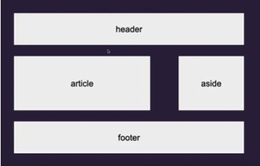 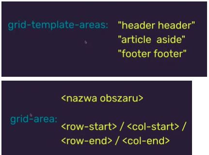 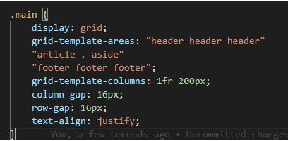za pomocą kropki dodajemy pusty element, i to nam się tak brzydko zrobi bo nie mamy zdefiniowanego column z 3 wartościami, więc musimy dodać wartość i wszystko wróci do normy
możemy do grida wrzucać niezdefiniowane obszary musimy pamiętać, że przy definicji szerokości kolumny trzeba podać dla pustego, żeby liczba kolumn zgadzała się z liczbą wartości dla kolumn
gdzie się kończy gdzie zaczyna, na której linii
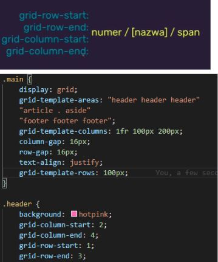 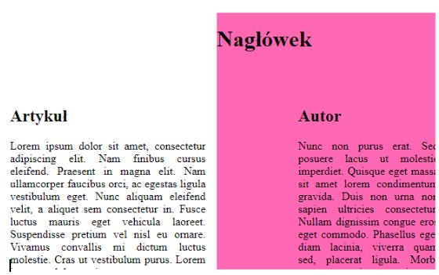Jak w header dopiszemy z-index np 1 to header zasłoni autora
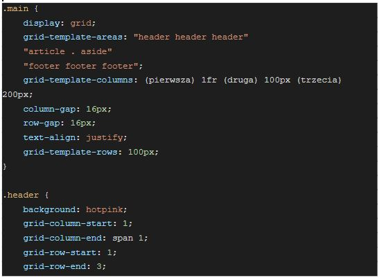cyfra po spanie mówi nam przez ile kolumn chce rysować nasz element, jak damy więcej niż mamy to grid stworzy kolejną kolumnę, ważne żeby ograniczyć się do ilości kolumn, które rzeczywiście mamy
grid-area: 1 / 1 / 3 / span 1;
grid-column: pierwsza / span 3;
grid-row: 1 / 3;
Grid to nie tetris, wszystko zamyka się w regularnych prostokątach. Grid działa tylko na dzieci swoje. Grid nie zastępuje flexboxa, one się super uzupełniają. Grid jest stosowany do budowania całych layoutów, flexboxa używamy do pozycjonowania, centrowania elementów już wewnątrz pojedynczego elementu, konkretnej treści
Są 3 artykuły w sekcji i żeby dodać grida to można ominąć sekcję i dodać diva bezpośrednio nad artykułem i objąć je 3, generalnie też nie wszystko trzeba pakować w grida
W devtollsach jest opcja na 3 kropkach show media queries i pokazuje na jakich szerokościach mamy zdefiniowane style poza tymi default, można też linijki dodać.
Media queries & mobile first
CSS media queries - zapytania o media
Strony są skrojone na wymiar, jedna strona z tym samym kodem HTML może wyświetlać się na komputerze, tablecie, telefonie, tylko style zmieniamy.
RWD - responsive web design
@media screen, print, all … media type
min-width, max-width, color, aspect-ratio, orientation ...media feature
możemy łączyć za pomocą and / not / ,
pewnego rodzaju wyrażenie logiczne.
@media query musi być na dole strony bo jak przeniesiemy na górę to zadziała specyficzność, definiujemy po zdefiniowaniu elementu
@media screen and (max-width: 600px) {
body {
background: hotpink;
}
.footer {
background: blueviolet;
}
}
@media not screen and (min-width: 600px), not zaneguje wyrażenie, jeżeli któryś z tych dwóch będzie fałszem no to będzie prawda
@media screen, (max-width: 600px), "," działa jak or czyli zawsze teraz będą te style media
mobile-first takie podejście, stylujemy stronę najpierw na urządzenia mobilne a potem za pomocą media-queries ustalamy jak elementy powinny wyglądać na rozdzielczościach większych,
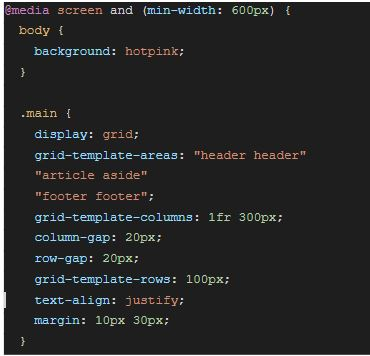przenosimy to z maina do @media, i nam się pokazuje teraz to jako na telefonie, jak dojade do 600 to się zmienia
320px mobilka, 768 tablet, 1024, 1440, tutaj podajemy min
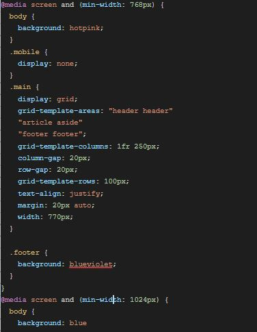jak zdefiniujemy coś na 768 to nie zdefiniujemy tego a nie zdefiniujemy tego na 1024 to będą te same style co na 768
chyba, że zrobimy tak: @media screen and (min-width: 768px) and (max-width: 1023px)
podamy max-width graniczna wartość 1023px; to ponadto nie będą już te style stosowane, np.nie będzie grida
breakpoint punkt, w którym następuje łamanie strony, szerokości na których następuje zmiana
responsywność w mobile first polega na tym, że najpierw definiujemy style, które obowiązują na całej stronie łącznie z wersją mobilną a potem dodajemy kolejne breakpointy, żeby lepiej dopasować je do większych ekranów.
przepisujemy tylko te własności, które chcemy zmienić, nie trzeba definiować wszytskiego na nowo, można chować elementy itp.
Hamburger menu
Przepis na hamburger menu:
Nawigacja
Style do nawigacji na mobile
Style do nawigacji na desktop
Przycisk do pokazywania/ukrywania (zmiana klasy)
Kod js do podpięcia się pod przycisk
Kod js do zmiany klasy
manipulacja klasami:
element.classList add, remove, toggle, contains (tutaj podajemy samą nazwę klasy bez kropki) classList to obiekt?
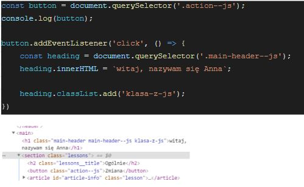i ja np. mogę sobie ostylować tą klasę i wtedy się zmieni po kliknięciu
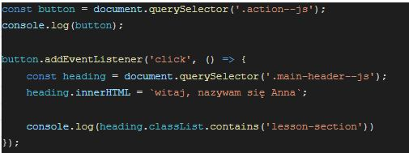żeby zdjęcie nie wystawało to display: block, max-width: 100%,
jak robimy header fixed i ustawiamy min height to dobrze dla tego co pod np. main ustawic margin żeby nie wchodziło na to
CSS part VI
Pseudoelementy & Pseudoselektory
pseudoelement pozwala na to, że css może tworzyć treść za pomocą własności content: “” element::before
treść elementu
element::after
wybieramy jakiś nagłówek nazwa::before i styluje content: “hello”; możemy za pomocą tego uzupełnić treść np przed albo po nagłówku, ta treść nie jest jest częścią DOMU, tej właściwej treści, to jest psuedoelement, możemy np zmienić mu display block, width, height background, często są to rzeczy dekoracyjne np display inline block width height backgrund border-radius 50% i jest kropka content zostaje “”
można też używać : pojedynczego ale bardziej poprawnie jest ::
Pseudoklasypseudoklasy : pojedynczy dwukropek,
selektor: hover, visited, focus
modyfikator elementu, którego działanie wynika z innego działania, często się używa na linkach, focus np do inputów
first-child, last-child …
jeśli ten element jest trzecim dzieckiem jakiegoś rodzica to wtedy te style się wykonają na nim właśnie, wszystkie artykuły nazywają się week summary, dodam week-summary:first-child: to się ostyluje tylko ten, który jest 1 dzieckiem grida w którym one się znajdują
selektor:not(selektor) zaprzeczenie
.week-summary:not(.week-summary--special)
background: hotpink;
wszystkie inne oprócz tego special się ostylują
SASS/SCSS
Problemy ze stylowaniem:
-porozrzucane klasy (bałagan w plikach)
-@media oddzielone od elementu (konieczność ponownego definiowania)
-kiepska czytelność plików (szczególnie przy zagnieżdżeniach)
-brak możliwości definiowania funkcji do robienia podobnych rzeczy
Na ratunek preprocesory, sass to preprocesor css, zamienia nam swoją składnię jakąś na takiego css-a który jest rozumiany przez przeglądarkę
SASS dokumentacjaSASS potrzebuje narzędzia do działania zainstalujemy go potem teraz się pobawimy za pomocą narzędzia w przeglądarce
SASS vs SCSS
sass to narzędzie, ma swoja składnię ale też składnię scss, to są dwie różne składnie, Maciek używa SCSSa bo jest prostsza i bardziej czytelna
sassowa nie używa np. nawiasów klamrowych taki jest pythonow xd
dwa rodzaje plików:
.scss dla programisty -->sass nad strzałką → .css dla przeglądarki my piszemy w scss a narzędzie sass zamienia te pliki na pliki css które przeglądarka rozumie
SASS toolco nam daje sass? np $zmienna
@mixin @include
przyjmują kilka własności
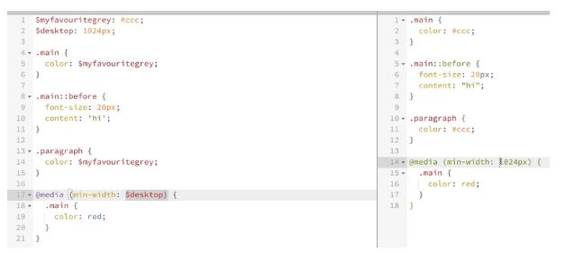 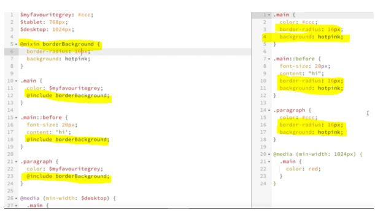możemy też zrobić mixin który będzie przyjmował parametry
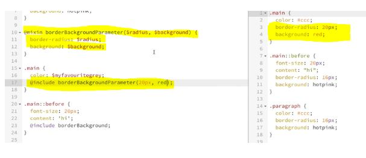@extend
w @include to jest wrzucane do środka a w @extend wyrzuca nam na zewnątrz lepiej mixin i include
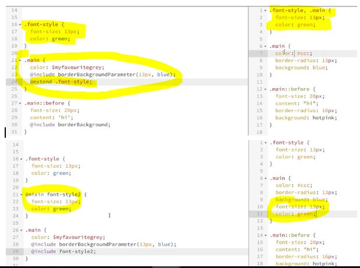& parent selector
mamy to samo w obu stron
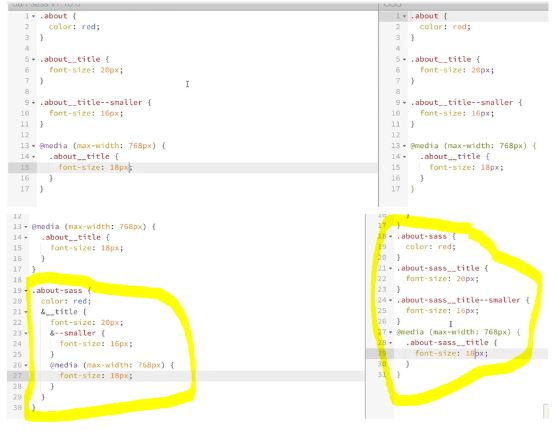kod wynikowy jest identyczny ale wszystko zapisaliśmy w sasie
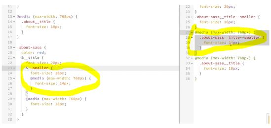Ważne kiedy korzystamy z preprocesorów nie edytujemy plików wynikowych .css
node-sass
Połączyć noda z sassem, żby korzystać z niego w wersji składniowej
npm install node-sass --save-dev
npx node-sass main.scss main.css
node-sass src/style.scss dest/style.css
jak zrobimy teraz jakąś zmianę w main.scss to musimy ją wywołać przez tą samą komendę.
Nie zmieniać nic w css bo one tam się nie zapisują, zawsze muszą być robione w scss i zmienione do css.
Podpinamy ten plik main.css do HTML, dodajemy też klasę test do naszego pliku index html
nie chcemy cały czas dodawać komendy do wywoływania, więc npx node-sass -w main.scss main.css i teraz jak dodam zmianę to się pokazuje na bieżąco i w terminalu też pokazuje change
jak popełnimy błąd to też w terminalu się pokaże
ctr+c wychodzimy z polecenia
dodajemy do jsona
"scripts": {
"sass": "npx node-sass -w main.scss main.css",
i teraz uruchamiamy w terminalu npm run sass
i teraz znowu się powinno monitorować i zmieniać na bieżąco
zrobiliśmy folder sass i przenieśliśmy main.scss do folderu, trzeba teraz podmienić w jsonie ścieżkę do pliku sass/
po npm run sass sprawdzamy ścieżkę i dostajemy: npx node-sass -w scss/main.scss main.css
tak definiujemy skrypty
tworzymy plik style.scss w katalogu sass, przenosimy tam nasze style z style.css, podmieniamy w json
scripts": {
"sass": "npx node-sass -w scss/style.scss style.css",
i komenda npm run sass
generalnie pamiętać, żeby zawsze dobra była ścieżka do pliku bo jak widać może mi nie działać jak nie jest xd
CSS part VII
Import/ export - koncept + import w stylach
Świat aplikacji i stron stworzony jest z modułów dlatego korzystamy z paczek np. npm. Po co moduły?
-aplikacje szybko rosną i trudno trzymać wszystko w jednym pliku
-chcemy korzystać z wybranych funkcji w różnych plikach
-chcemy mieć porządek w projekcie
-chcemy korzystać z kodu udostępnianego przez innych developerów (albo udostępniać swój)
import w (s)css @import “źródło”
Tworzymy w katalogu sccs katalog modules i tworzymy files dla poszczególnych modułów/bloków, które przenosimy z style.scss i musimy dołączyć:
@import "https://cdnjs.cloudflare.com/ajax/libs/normalize/8.0.1/normalize.min.css";
@import "modules/heading.scss";
@export raczej tutaj nie ma
CSS: Zmienne
CSS Custom Properties, do tego używamy psuedoselektor :root --zmienna - definiujemy w :root, wartość - dowolna wartość możliwa w css
:root {
--small-padding: 2px;
--text-color: yellow;
}
jak podamy tutaj niepoprawną wartość np. 10px dla text color, to ta wartość będzie ignorowana
pobranie wartości ze zmiennej za pomocą var(--zmienna)
h1 {
padding: var(--small-padding);
color: var(--text-color);
}
działa to podobnie do zmiennych, które mamy w scss, ale te sccowe są wywoływane raz kiedy zmieniamy scss kod na css kod a te zmienne css teraz co mówimy o nich żyją w przeglądarce, dzięki czemu możemy je modyfikować
za pomocą js możemy zmienić te wartości, dzięki temu możemy wpływać na wykorzystywanie tego koloru na całej stronie
a {
color: var(--text-color);
}
document.documentElement.style.setProperty(‘--zmienna’, ‘wartość’) zmiana wartości za pomocą js, zmieni się kolor jak podamy inną wartość. Głównie to robimy kiedy chcemy zmienić styl strony np. dark-mode, możemy zrobić przełącznik który pozwoli nam na zmianę koloru tekstu albo tła
nasze wartości też możemy nadpisywać za pomocą media queries
@media (min-width: 768px) {
:root {
-small-padding: 1px;
}}
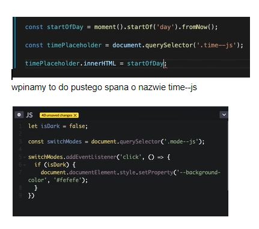